At 10:42:11, an AI revenue agent applies an 8% pricing exception to a $2.4 million renewal, triggers an invoice update, and sends a customer notice. The CRM responds slowly. The agent runtime times out and retries. The dashboard shows one failed tool call followed by one successful call; the CRM has one changed quote, billing has two adjustment requests, and the customer received one message with no visible approval reference. Operations can see activity. Audit still cannot prove which proposal was approved, which authority was presented, whether the first call committed, which downstream effect is authoritative, or what must be recovered.
This story was written with AI writing and visualization assistance. Every organization, account, action, identifier, metric, cost, threshold, incident, and service-level result is synthetic; the architecture is a reference design, not a claim about a deployed production system. “Action receipt” is an application architecture defined here, not a new standards-track protocol.
An enterprise agent does not complete work merely because a tool returned 200 OK, the model said “done,” or a trace ended without an error. Completion is a business claim. The organization needs durable evidence that one exact intent, based on one exact evidence set, passed one policy and approval decision, received one bounded authority object, produced one observed effect, and reached one explicit terminal state.
That evidence object is an action receipt.
A receipt is not a screenshot, a transcript, or a bag of logs. It is a versioned, canonical, integrity-protected envelope that joins intent, evidence, authority, request, effect, verification, ambiguity, recovery, and retention. It is created before execution, updated through a controlled state machine, sealed after independent verification, and stored separately from sensitive payloads. It links to traces and events; it does not pretend that observability is proof.
A trace says where the request went. A receipt says what the business can prove.
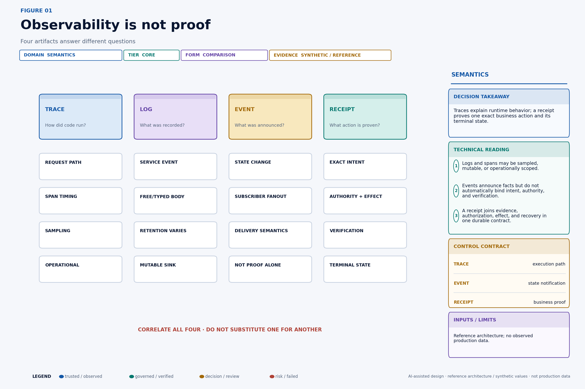
Technical summary#
The reference design introduces a receipt control plane beside the agent orchestrator and protected APIs. Before execution, it reserves a stable business_action_id, validates the proposal, binds evidence and authorization digests, and writes a prepared receipt. The executor then makes a conditional, idempotent request. An independent verifier observes target state. The receipt service completes the record as verified success, failed before effect, rejected, recovered, or unresolved ambiguity. Canonical bytes are digested and signed under a versioned profile; batches may be Merkle-anchored and independently timestamped.
Six rules define the system:
1. Prepare before effect. A durable receipt skeleton and action identifier exist before any consequential call.
2. Use one business action ID everywhere. Proposal, approval, lease, API request, events, traces, verification, compensation, and receipt share the same stable identity.
3. Treat timeouts as uncertainty, not failure. If the target may have committed, the state is ambiguous until authoritative reconciliation.
4. Verify effect independently. The component that attempted the action cannot be the only source claiming success.
5. Sign deterministic content. Schema validation and canonicalization define exactly which bytes are committed; a signature over ad hoc serialization is not portable proof.
6. Separate signed proof from sensitive evidence. The receipt core stores identifiers, digests, state, and verification; payloads remain in governed compartments with selective disclosure.
The result is not “blockchain for agents.” It is a conventional enterprise transaction pattern using typed schemas, stable identifiers, conditional mutation, durable state, cryptographic integrity, append-only lineage, and independent verification. Teams can implement it with relational databases, event streams, KMS-backed signatures, and ordinary APIs.
Scope, scenario, and evidence boundary#
The business scenario contains three effects:
• change quote:771.discount_pct from 0 to 8 with expected version 20;
• request one billing adjustment tied to the revised quote;
• send one approved customer message tied to the same renewal decision.
The agent operates on behalf of a revenue employee. Policy allows the recommendation; an eligible pricing approver accepts the exact delta; a one-use permission lease authorizes the CRM change. Billing and messaging use distinct authority and distinct effect receipts, all linked under one parent workflow receipt.
The architecture distinguishes four evidence artifacts:
Trace. A causal runtime structure of spans. W3C Trace Context standardizes propagation fields such as traceparent and tracestate so distributed requests can be correlated. The specification explicitly accommodates recording and sampling decisions. A trace can be incomplete by design.
Log. A timestamped operational record. The OpenTelemetry Logs Data Model provides a common model that can correlate logs with traces through trace and span identifiers. A log body still depends on emitter correctness, collection, sampling, transformation, retention, and access policy.
Event. A notification that something occurred. CloudEvents defines a common event-envelope approach across services. Delivery may be duplicated, reordered, delayed, or lost according to transport and consumer design. An event is evidence, not automatically proof of the underlying business fact.
Receipt. A durable application record joining exact intent, decision evidence, authority, execution, independently observed effect, and terminal lifecycle. This article's receipt semantics are a reference profile assembled from standards and production patterns; there is no universal “AI action receipt” standard being claimed.
Every quantitative value in the figures is synthetic. Standards claims link to their primary specifications. Cryptographic mechanisms protect integrity and origin under their assumptions; they do not prove that a policy was wise, a human understood an approval, a source record was correct, or a business outcome was beneficial.
The action-receipt control plane#
The receipt control plane is logically separate from the model runtime. The runtime may propose an action, but it cannot mint proof of its own success. The protected domain remains authoritative for business state, and a verifier reads that state through an independently governed path.
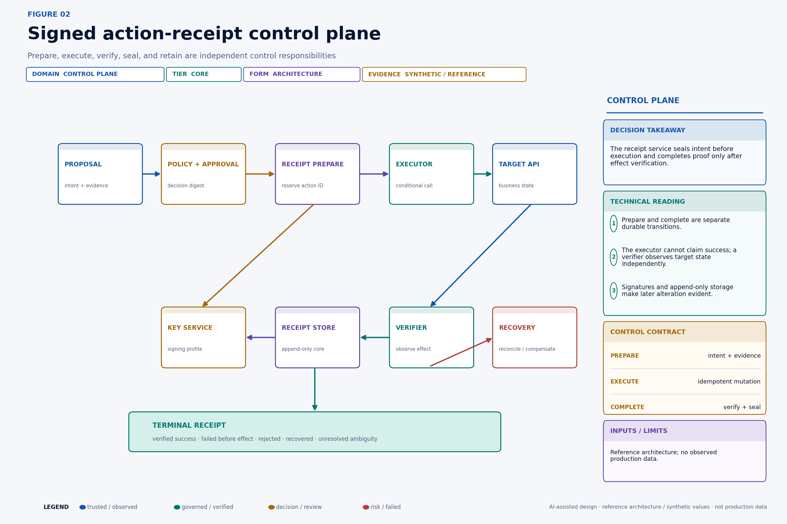
The path has three durable boundaries.
Prepare. The receipt service validates an exact action proposal, evidence manifest, policy result, approval, permission lease reference, target precondition, and recovery specification. It reserves business_action_id atomically and writes status prepared. If the identifier already exists with another proposal digest, it fails closed.
Execute. A narrow executor presents the business action ID, request digest, target precondition, and bounded authority to the protected API. The API atomically checks idempotency and the precondition with the mutation. It returns an effect identifier and new version when possible. The executor records the response but never unilaterally marks the business action verified.
Complete. The verifier queries authoritative state or a domain ledger. It confirms the expected field-level effect, version transition, and downstream invariant. The receipt service appends verification, recovery if any, and terminal status. It canonicalizes the signed core, produces a digest and signature, and persists seal metadata.
The append store should deny in-place updates to sealed versions. Mutable operational fields—delivery retry count, archive tier, disclosure grants—live outside the signed core or produce new signed receipt versions. “Append-only” is an invariant enforced by the write API and storage controls, not a marketing label for an object bucket.
The verifier must be meaningfully independent. A second method in the same executor process reading the same cached response is not independence. Depending on risk, independence can mean a separate service identity, a read replica fed from the authoritative change stream, a domain ledger, a second API endpoint, or a reconciliation job with different credentials and failure modes.
The receipt is a provenance join#
Business action evidence is usually scattered: natural-language intent in a conversation, sources in a vector store, policy logs in an authorization engine, approval in a workflow tool, access token data in an identity system, request spans in telemetry, state changes in a business database, and recovery in an incident queue. The receipt makes the relationship explicit.
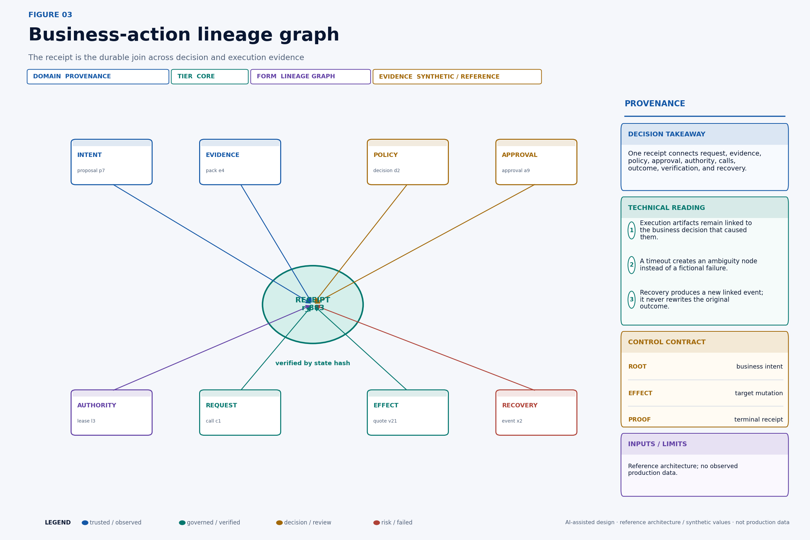
W3C PROV-O supplies useful concepts for this graph: entities, activities, agents, derivation, attribution, generation, use, and invalidation. A proposal entity was derived from an evidence pack. An approval activity used that proposal. An executor agent used a permission lease and generated a request. A target mutation generated a new resource version. A verifier activity observed that version. A recovery activity may later invalidate or compensate for an effect.
The receipt should not embed all parent objects. It stores resolvable identifiers, versions, and cryptographic digests. A verifier can fetch permitted evidence and compare its canonical digest. If the source no longer exists under retention policy, the receipt can still prove that a specific commitment existed, subject to the digest and signature assumptions, without reconstructing its content.
Parent workflow receipts help model multi-effect transactions. The renewal workflow can have child receipts for CRM, billing, and messaging. The parent does not become verified until its completion predicate holds—perhaps CRM updated, exactly one billing adjustment accepted, message delivery recorded, and no child remains ambiguous. A child compensation produces a new receipt linked to both the child and parent.
Define a versioned receipt envelope#
The data contract must be boring enough to validate mechanically and expressive enough to reconstruct the action. Avoid unconstrained metadata objects in the signed core; they become an ungoverned channel and make schema evolution unpredictable.
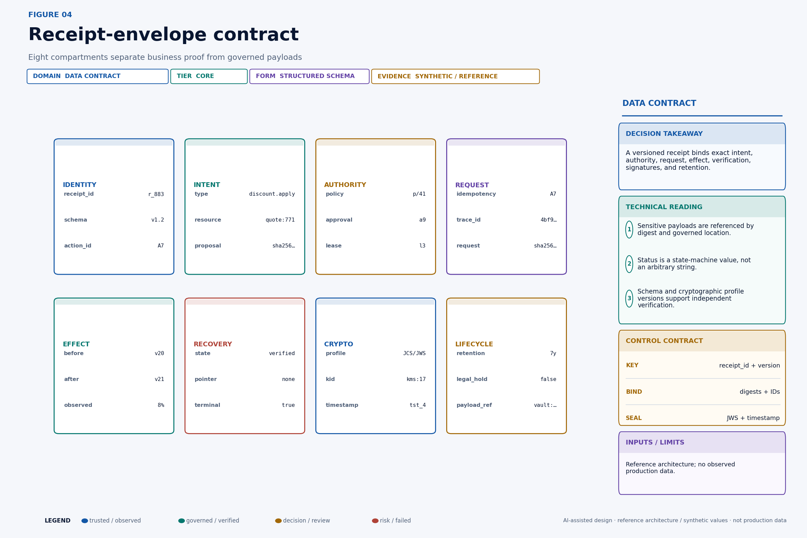
An illustrative terminal receipt is:
{
"schema": "action-receipt/v1.2",
"receipt_id": "rcpt_01JQ8Q4K2A",
"receipt_version": 3,
"business_action_id": "act_01JQ8PZZ7C",
"parent_workflow_id": "wf_renewal_042",
"tenant_id": "tenant_acme",
"intent": {
"type": "quote.discount.apply",
"resource": "crm://quotes/771",
"delta": {"discount_pct": {"from": 0, "to": 8}},
"expected_version": 20,
"proposal_sha256": "sha256:91ab...72e0",
"evidence_pack_sha256": "sha256:3e17...41c9"
},
"decision": {
"policy_id": "pricing-action/41",
"policy_result_sha256": "sha256:4c8e...9b11",
"approval_id": "apr_01JQ8P...",
"approval_sha256": "sha256:ca20...18de"
},
"authority": {
"lease_id": "lease_01JQ8Q...",
"lease_sha256": "sha256:129f...77a2",
"actor": "spiffe://corp/agents/renewal",
"on_behalf_of": "user:ae-184"
},
"execution": {
"request_sha256": "sha256:ac04...7d42",
"idempotency_key": "act_01JQ8PZZ7C",
"trace_id": "4bf92f3577b34da6a3ce929d0e0e4736",
"attempts": 2,
"first_started_at": "2026-08-23T10:42:11.024Z"
},
"effect": {
"state": "verified",
"resource_version_before": 20,
"resource_version_after": 21,
"observed": {"discount_pct": 8},
"observed_state_sha256": "sha256:5f28...e113",
"verified_at": "2026-08-23T10:42:13.918Z",
"verifier": "spiffe://corp/control/receipt-verifier"
},
"recovery": {
"ambiguous_at": "2026-08-23T10:42:12.040Z",
"resolved_at": "2026-08-23T10:42:13.918Z",
"resolution": "effect_found_return_prior_success"
},
"seal": {
"profile": "receipt-jcs-jws/v1",
"algorithm": "ES256",
"kid": "kms://receipt-signing/keys/17",
"signed_core_sha256": "sha256:ef32...9a70",
"jws": "eyJhbGciOiJFUzI1NiIs...",
"timestamp_token_ref": "tsa://batch/2026-08-23/1045"
},
"lifecycle": {
"retention_class": "pricing-decision-7y",
"payload_compartment": "evidence-vault://ev_992",
"sealed_at": "2026-08-23T10:42:14.007Z"
}
}This is not a recommendation to expose every identifier to every consumer. The receipt service can produce views. A customer-dispute view might disclose the approved field delta and timestamp but not internal risk scores. A security view might disclose actor identity and key metadata but not customer email content.
State belongs to a controlled vocabulary: prepared, executing, ambiguous, failed_before_effect, rejected, effect_observed, verified, recovery_required, recovered, and perhaps disputed. Unknown states are invalid. Terminal state semantics must be versioned so an auditor in five years can interpret them.
Canonicalize before signing#
JSON object order is not semantically significant, numbers can be serialized differently, Unicode has representation subtleties, and serializers change across languages. Signing whichever byte string one service happened to emit makes cross-system verification brittle.
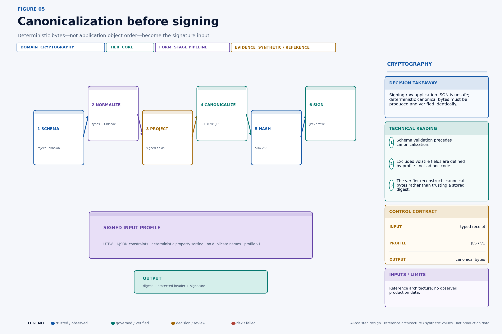
RFC 8785 defines the JSON Canonicalization Scheme, based on deterministic property sorting and constrained JSON serialization. A receipt profile can validate an I-JSON-compatible typed object, project the exact signed fields, serialize them with JCS, hash the bytes, and carry that canonical payload in or beside a JSON Web Signature defined by RFC 7515.
The profile must specify more than algorithm names:
• schema identifier and allowed field projection;
• canonicalization algorithm and version;
• digest algorithm and encoding;
• JWS serialization, detached or attached payload behavior;
• protected headers, permitted algorithms, and critical parameters;
• key identifier semantics and trust store;
• signature creation and verification rules;
• timestamp, key-status, and revocation evaluation;
• payload size and denial-of-service limits;
• behavior for unknown schema or profile versions.
Illustrative signing code:
def seal_receipt(receipt, profile, kms):
typed = profile.schema.validate(receipt)
signed_core = profile.project_signed_fields(typed)
canonical = profile.jcs.canonicalize(signed_core)
digest = sha256(canonical)
protected = {
"alg": profile.allowed_algorithm,
"kid": kms.active_key_id(profile.key_purpose),
"typ": "application/action-receipt+jws",
"receipt-profile": profile.version
}
jws = kms.sign_jws(protected=protected, payload=canonical)
return {"digest": digest, "jws": jws, "canonical": canonical}The verifier does not trust the stored signed_core_sha256. It validates the schema, reprojects the signed fields, reconstructs canonical bytes, recomputes the digest, verifies the JWS protected header and signature, and evaluates key policy. The stored digest is a convenient commitment and index; it is not the validation authority.
Never accept alg: none, allow the receipt to select arbitrary keys, or interpret an unknown critical header. Pin algorithms by receipt profile. Keep signing keys in a KMS or HSM appropriate to the risk and separate receipt signing from application TLS keys.
Schema evolution without rewriting evidence#
Receipt schemas will change. A new action may need settlement identity, a policy engine may add an obligation digest, or a verifier may distinguish “observed” from “settled.” The dangerous migration is to deserialize an old receipt into the latest object model, fill defaults, and sign the transformed representation as though it were the original. That destroys the distinction between evidence created then and interpretation added now.
Use immutable profiles. action-receipt/v1.2 identifies the field vocabulary and state semantics; receipt-jcs-jws/v1 identifies the signed projection and canonicalization. A verifier loads the historical profile by exact identifier. A migration produces an attestation that links the old digest to a new normalized view:
old receipt r@3 --interpretedBy--> migration profile m@2
new view v@1 --wasDerivedFrom--> old signed digest H(r@3)The new view may be indexed for current tools, but it never replaces the original canonical bytes or signature. If a state named effect_observed in v1.2 is split into committed and settled in v2, the migration records which interpretation was possible from old evidence and which remains unknown. It must not infer settlement merely because the latest schema requires it.
Compatibility tests need positive and negative vectors. Positive vectors prove that independent implementations produce and verify the same digest. Negative vectors include duplicate property names, unknown critical fields, malformed Unicode, extreme numbers, prohibited algorithms, altered field order, excluded-field injection, and a valid signature over the wrong receipt profile. Preserve these vectors with the profile documentation for the full retention horizon.
Policy changes also create new evaluations, not retroactive facts. An auditor can ask whether an action conformed to the policy in force then and whether it would conform now. Store both answers as separate, timestamped attestations linked to the original receipt. This allows control improvements without falsifying history.
Anchor batches without inventing a ledger#
Per-receipt signatures make mutation detectable, but a store operator could delete a whole receipt or present an older subset. A batch commitment can improve completeness evidence.
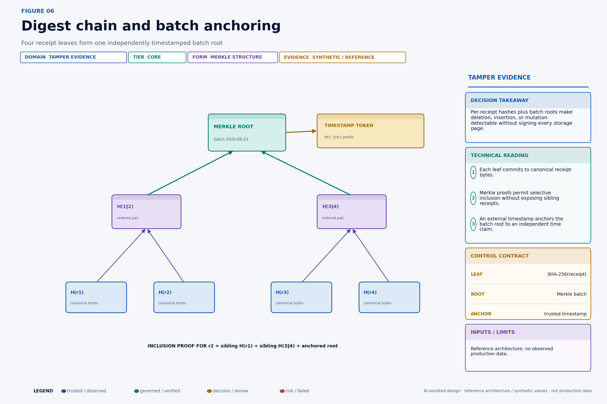
For each sealed receipt, compute leaf Lᵢ = H(domain_separator || receipt_id || canonical_receipt_bytes). Sort or order leaves under an explicit rule, construct a binary Merkle tree, and publish the root with batch metadata. A receipt archive stores its inclusion path. The verifier recomputes the leaf and path to the root.
A trusted timestamp can provide evidence that a digest existed by a stated time. RFC 3161 defines the Time-Stamp Protocol for timestamping a hash imprint. A deployment can timestamp each batch root, subject to its trust model, time-stamping authority, validation data, and long-term cryptographic preservation plan.
This does not create consensus, prevent the source system from executing an unauthorized action, or guarantee availability. It creates tamper evidence under explicit assumptions. If deletion under privacy or retention policy is required, a separate manifest can record that a committed receipt was lawfully removed or cryptographically erased without retaining the receipt content. Completeness and erasure need a jointly designed policy.
Batch cadence is a tradeoff. A one-minute batch reduces anchoring cost and limits the window in which omission is not externally committed. High-risk payments might use immediate signing plus frequent roots; low-risk internal updates might accept a longer batch interval. The receipt still exists and is signed before batch anchoring.
Verify signatures and business effects#
Signature verification is necessary but not sufficient. A perfectly signed receipt could describe an action that never occurred, a policy that was misconfigured, or an effect that differs from intent.
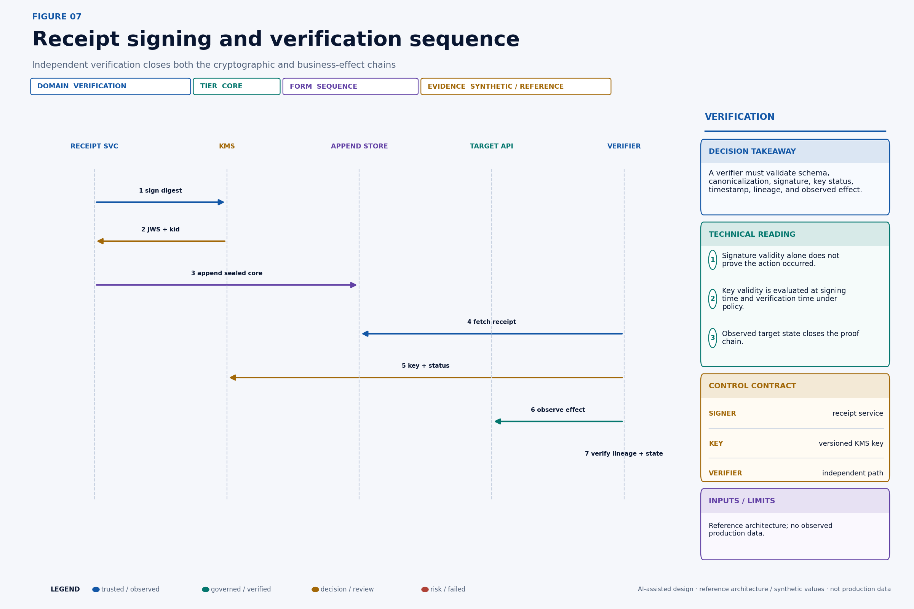
A complete verification routine checks:
1. Syntactic validity: receipt schema and profile version are recognized.
2. Canonical commitment: signed projection reconstructs to the committed canonical bytes and digest.
3. Signature: algorithm, protected headers, key identity, signature, and critical parameters pass policy.
4. Temporal key status: the key was authorized at signing time; revocation and compromise policy determine later treatment.
5. Batch inclusion and timestamp: if required, the leaf path reaches the anchored root and the timestamp token validates.
6. Lineage: referenced proposal, evidence, policy, approval, authority, request, and recovery digests resolve or have documented disposition.
7. Effect: authoritative business state matches the receipt's field-level postcondition and version transition.
8. Terminal semantics: state transitions are valid and no unresolved child effect contradicts parent completion.
Long-term verification needs algorithm agility and archival validation data. A receipt retained for seven years may outlive a key certificate, an algorithm recommendation, or a KMS product. Store profile documentation, key metadata, relevant certificate chains or trust references, timestamp material, and migration events. Re-sealing an archive produces a new outer evidence layer; it must not overwrite the original signature.
Correlate receipts with traces, logs, and events#
The receipt does not replace observability. It gives telemetry a stable business anchor.
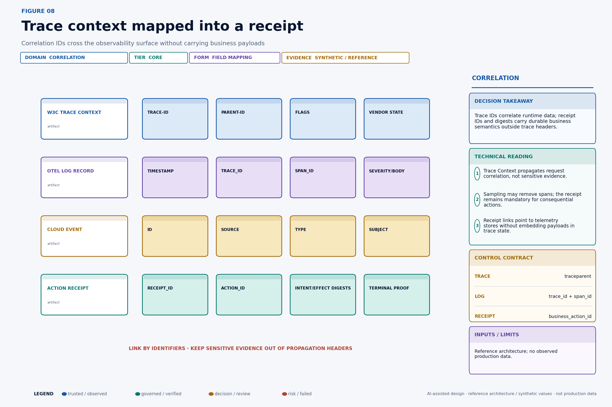
traceparent carries trace position across services. It should not carry customer identifiers, approval details, or evidence digests. W3C Trace Context includes privacy and security considerations precisely because propagated context crosses boundaries. Keep it minimal.
OpenTelemetry log records can include trace_id, span_id, service identity, severity, event name, and business_action_id as a governed attribute. Logs link to the receipt; they do not copy the receipt payload.
A CloudEvent announcing receipt state may include:
{
"specversion": "1.0",
"id": "evt_01JQ8R...",
"source": "/receipt-control/tenant_acme",
"type": "com.example.action-receipt.verified.v1",
"subject": "receipts/rcpt_01JQ8Q4K2A",
"time": "2026-08-23T10:42:14.007Z",
"datacontenttype": "application/json",
"data": {
"receipt_id": "rcpt_01JQ8Q4K2A",
"business_action_id": "act_01JQ8PZZ7C",
"state": "verified",
"signed_core_sha256": "sha256:ef32...9a70"
}
}Consumers treat the event as a notification and fetch the authorized receipt view. The event transport's delivery semantics do not define the receipt state machine. Duplicate events are safe because event.id, receipt version, and business action ID are stable.
Sampling policy changes around consequential actions. Receipt creation is mandatory for the selected action class; traces may still be sampled according to policy. Tail-based tracing can preserve spans for ambiguous, rejected, compensated, high-latency, or high-value actions. The receipt state is a useful sampling signal, but the trace collector must avoid circular dependency that delays execution.
Idempotency is business identity, not retry middleware#
Retries happen after timeouts, connection resets, process crashes, queue redelivery, and user refresh. HTTP method semantics help—RFC 9110 defines idempotent methods in terms of intended effect—but many consequential operations use POST or domain mutations whose business identity is application-specific.
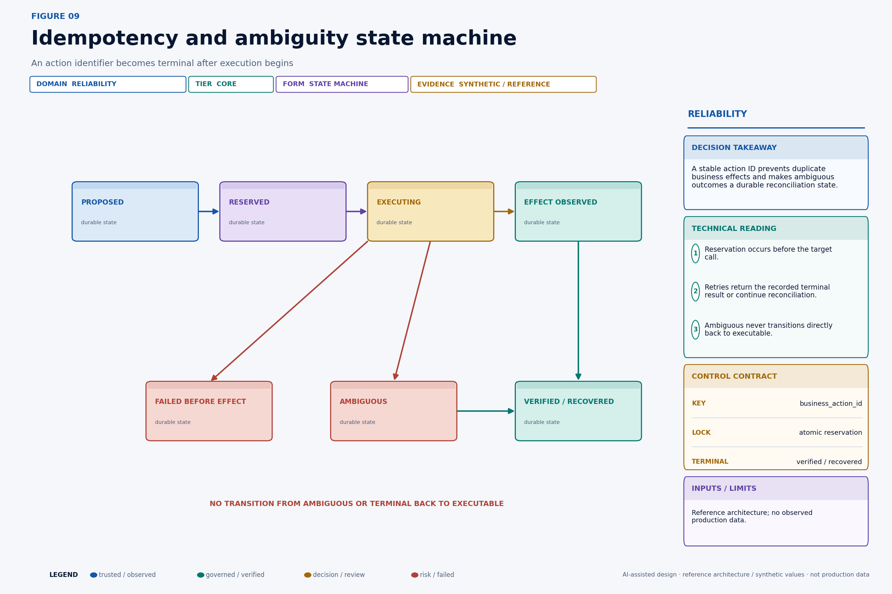
The idempotency key should represent the business action, not an HTTP attempt. Reusing a random key on each retry defeats deduplication. Reusing one key for a materially changed proposal conflates actions. Bind the key to a proposal digest:
business_action_id = stable opaque identifier
proposal_digest = H(canonical intent + evidence + authority + precondition)
same action_id + same digest → return/continue existing action
same action_id + different digest → reject as key conflict
new action_id + same digest → policy-defined duplicate proposal checkThe target should store action identity and result atomically with the mutation when possible:
begin;
select proposal_sha256, terminal_result
from business_action_ledger
where tenant_id = :tenant and action_id = :action
for update;
-- Existing matching action: return its terminal result.
-- Existing different digest: reject.
-- Otherwise reserve the action and continue.
update quote
set discount_pct = 8, version = version + 1
where tenant_id = :tenant
and quote_id = 771
and version = 20;
-- Require exactly one updated row.
insert into business_action_ledger (..., terminal_result)
values (..., :result);
commit;Cross-system actions cannot share one database transaction. Each child effect needs its own idempotency ledger and receipt; the parent workflow coordinates completion and compensation. “Exactly once” becomes an application outcome achieved through at-least-once delivery, deduplication, conditional state, and reconciliation—not a property inferred from a queue setting.
A timeout is an ambiguity window#
Suppose the CRM commits at T2, but the network drops the response. At T3, the caller observes a timeout. “Request failed” is not known. The known fact is “response not observed before deadline.”
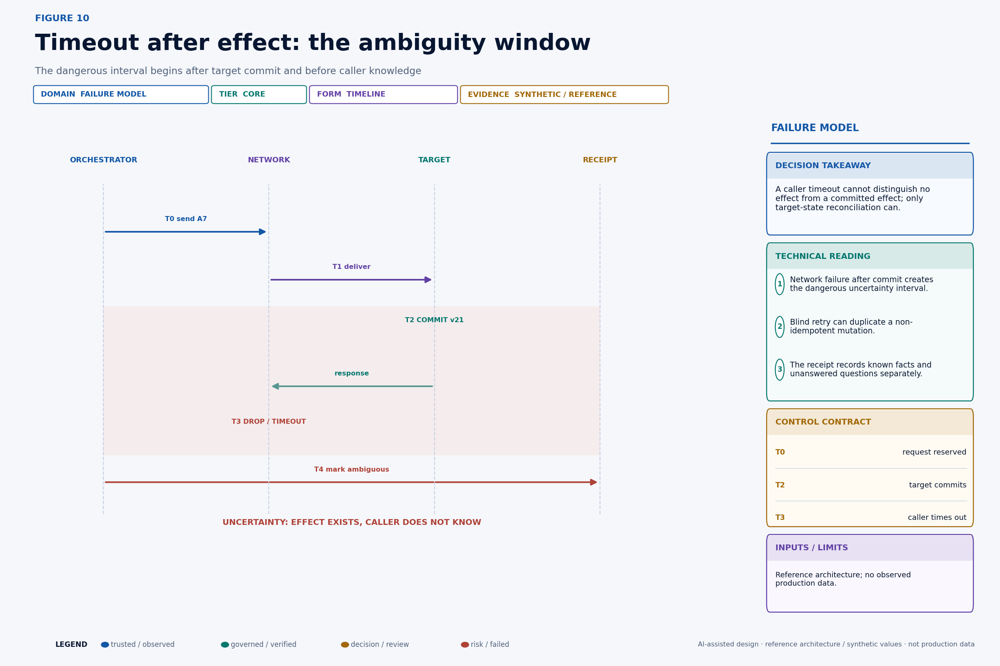
The receipt records facts separately:
• request bytes and digest were prepared;
• action ID was reserved;
• target accepted a connection or delivery was attempted;
• no valid response arrived by the deadline;
• effect state is unknown;
• retry is prohibited until reconciliation or target idempotency is proven.
Blind retry is especially dangerous when the API creates a new object or triggers downstream work. A second price adjustment, refund, message, or export may be accepted. Even if the direct CRM mutation is idempotent, a webhook subscriber might duplicate side effects unless it deduplicates the same business action ID.
Ambiguity has economic duration. Define ambiguity_age = now − ambiguous_at for unresolved receipts. The risk backlog can be approximated by Σ_i exposure_i × ambiguity_age_i, where exposure reflects action value, reversibility, customer impact, and propagation. This is a prioritization index, not expected loss, but it prevents a high-value ambiguous payment from sitting behind thousands of low-risk metadata updates.
Conditional mutation protects concurrent business state#
An approved action may be cryptographically valid and still stale. A human could edit the quote after the proposal was prepared. The receipt binds the state version used for decision; the API enforces it.
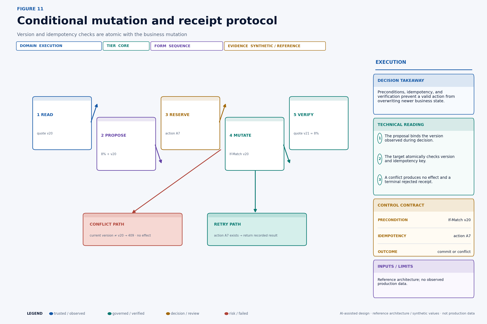
The executor sends:
POST /quotes/771/actions/apply-discount HTTP/1.1
Authorization: DPoP eyJ...
Idempotency-Key: act_01JQ8PZZ7C
If-Match: "quote-v20"
Content-Type: application/json
{
"discount_pct": 8,
"proposal_sha256": "sha256:91ab...72e0",
"receipt_id": "rcpt_01JQ8Q4K2A"
}The headers illustrate a deployment profile; the business API still needs explicit semantics. If-Match must bind the version whose fields were approved. The idempotency ledger must be scoped by tenant and endpoint or action type. A repeated matching request returns the original result. A matching key with different bytes returns conflict. A stale If-Match returns no effect and the receipt becomes rejected or failed_before_effect, not ambiguous.
After success, the verifier reads quote version 21 and asserts the exact postcondition. “Resource exists” is insufficient if the wrong discount was applied. Verification can include negative invariants: no unapproved field changed, no duplicate adjustment exists, and audit ownership matches the actor chain.
Reconcile ambiguity from authoritative state#
Recovery begins by observing business reality, not by searching for a successful log line.
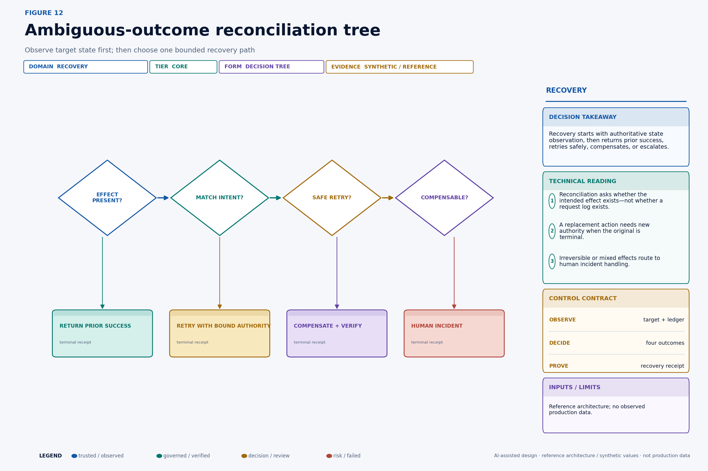
The reconciler checks target idempotency ledger, resource version history, domain event stream, and downstream systems. Four broad outcomes follow:
1. Intended effect exists exactly once. Verify it and return the prior success. Do not execute again.
2. No effect exists and retry is safe. If the original authority remains valid and unused under policy, retry the same action ID; otherwise issue new bounded authority linked to the original receipt.
3. A wrong or partial effect exists and is compensable. Create a compensation proposal and receipt. Do not delete or rewrite the original evidence.
4. Effect is mixed, irreversible, or unverifiable. Escalate to an eligible human with a structured incident packet and contain further related actions.
Illustrative reconciliation:
def reconcile(receipt, domain):
state = domain.observe(receipt.intent.resource,
action_id=receipt.business_action_id)
if state.matches(receipt.intent.postcondition) and state.effect_count == 1:
return complete_verified(receipt, state)
if state.effect_count == 0 and domain.retry_is_safe(receipt):
return retry_same_action_id(receipt)
if state.has_partial_or_wrong_effect and domain.can_compensate(state):
return propose_compensation(receipt, state)
return open_human_incident(receipt, state)Every branch records observation time, source versions, decision reason, actor, and result digest. Recovery is a business action and needs its own authority, verification, and receipt.
Selective disclosure protects evidence#
An audit receipt that copies full prompts, emails, access tokens, and customer data into a long-retained ledger creates a new security and privacy problem. Proof should be minimal and compartmentalized.
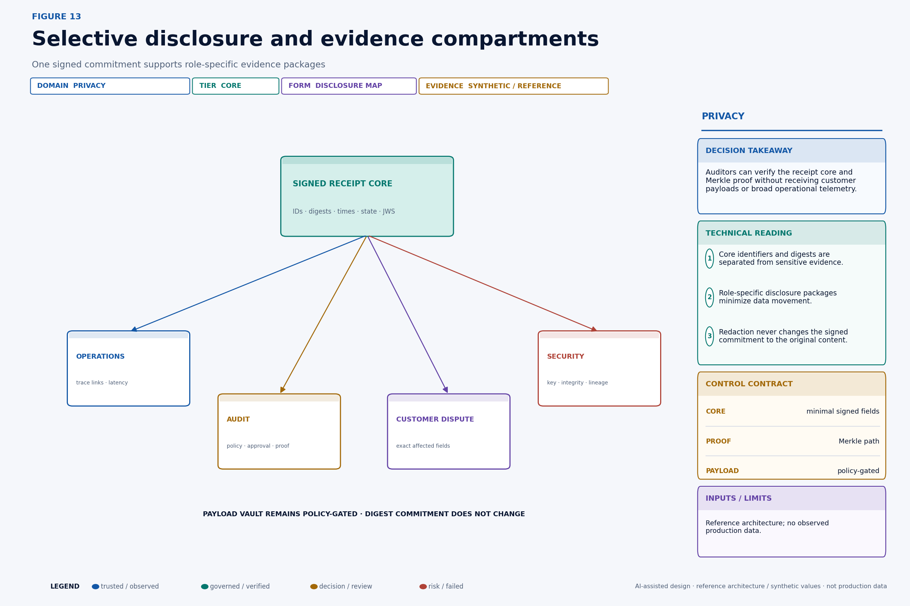
The signed core contains identifiers, typed action fields needed for proof, digests, state, timestamps, and cryptographic metadata. Sensitive evidence lives in a vault governed by tenant, purpose, legal basis, role, case, and time. A disclosure package includes the minimum authorized fields plus digest proofs linking them to the signed commitment.
Digesting low-entropy sensitive values can leak them through guessing. Do not publish SHA-256(discount=8) and call it private. Commit to a canonical structured object with a cryptographically random salt or use an authenticated encryption and commitment design reviewed for the threat model. Salt management, disclosure proofs, and long-term verification belong in the receipt profile.
Redaction must preserve the original commitment. Generate a view that omits fields and includes permitted proofs; never create a modified object and reuse the original signature as if it signed the redacted bytes. Advanced selective-disclosure signature schemes may help, but conventional compartmentalization and Merkle proofs are often easier to operate.
Data minimization also applies to trace context, events, and metrics. Emit receipt identifiers and categorical reason codes; fetch payloads through an authorized path only when needed.
No single control proves the action#
Teams often over-trust one mechanism: “It is signed,” “we have audit logs,” or “the endpoint supports idempotency.” Each closes only part of the failure surface.
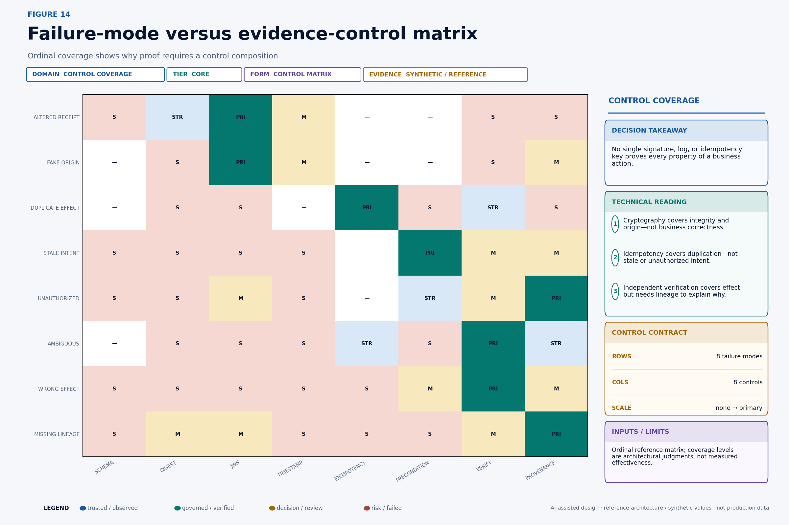
Schema validation detects malformed or unknown receipt shapes but does not authenticate origin. A digest detects change relative to a trusted commitment but does not identify the committer. JWS authenticates the signer and signed bytes under a key trust model but does not prove the underlying action occurred. A timestamp supports an existence-time claim but not correctness. Idempotency limits duplicate effects but not stale or unauthorized intent. Preconditions protect current state but not operator identity. Independent verification proves observed effect but cannot explain why it was authorized. Provenance provides lineage but needs integrity controls.
The operating design therefore composes controls and states the assurance claim narrowly:
Under receipt profile v1, key policy K, timestamp policy T, and domain verifier V, this record provides integrity-protected evidence that actor A, acting for subject S under decision D, attempted business action X and that authoritative domain state Y was observed at time t.
That is stronger—and more honest—than “the AI did it.”
Price the proof system#
Receipt infrastructure adds storage, cryptographic calls, verification reads, event traffic, and operational ownership. The cost model should separate mandatory hot proof from optional or tiered payload.
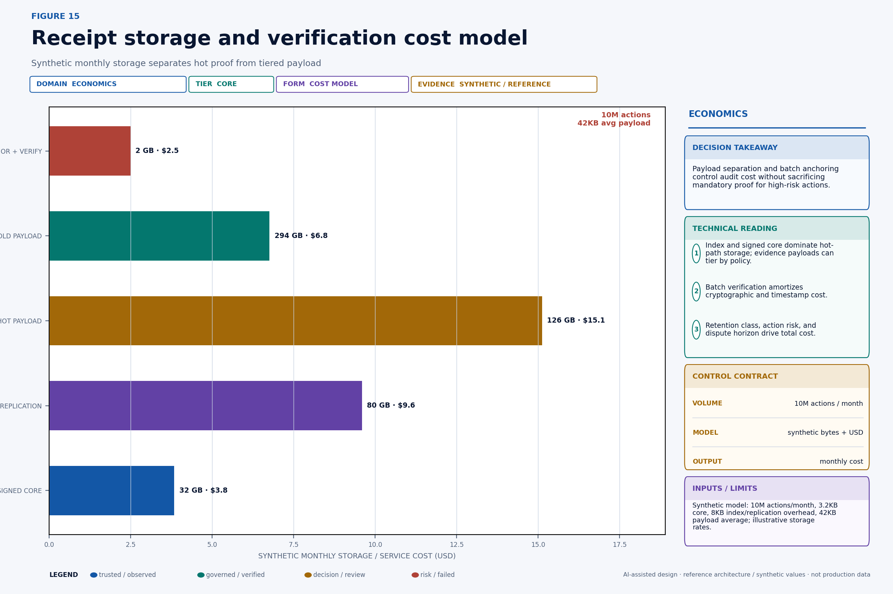
For action volume N, signed-core bytes B_c, indexed replication multiplier r, payload bytes B_p, hot fraction h, retention months m, and service costs C_s, an illustrative monthly run-rate is:
Storage_hot = N × (B_c × r + h × B_p) × m_hot
Storage_cold = N × ((1 − h) × B_p) × m_cold
Cost_total = rate_hot × Storage_hot
+ rate_cold × Storage_cold
+ C_sign + C_timestamp + C_verify + C_operationsFigure 15 assumes 10 million actions per month, a 3.2 KB signed core, 8 KB of index and replication overhead per action, 42 KB average payload, and illustrative storage/service rates. It is not a cloud quote. Network, database write IOPS, KMS pricing, minimum retention, regional replication, legal hold, and verifier API calls can dominate.
Segment by action risk. High-risk pricing, payments, terminations, exports, and customer commitments may require mandatory payload retention and immediate verification. Low-risk internal enrichment may retain a signed core and short-lived payload. Sampling the receipt itself for consequential actions defeats the evidence claim; tiering payload is the safer cost lever.
The benefit model includes avoided duplicate effects, faster incident investigation, reduced audit labor, fewer unresolved disputes, narrower data disclosure, and safer autonomy. Measure investigation time and ambiguity age before deployment so value can be demonstrated rather than asserted.
Reconstruct disputes deterministically#
Without a receipt, an investigator searches model transcripts, application logs, identity records, policy decisions, approval tools, API databases, message queues, and customer communication. Correlation depends on timestamps and partial IDs; sampled spans may be missing.
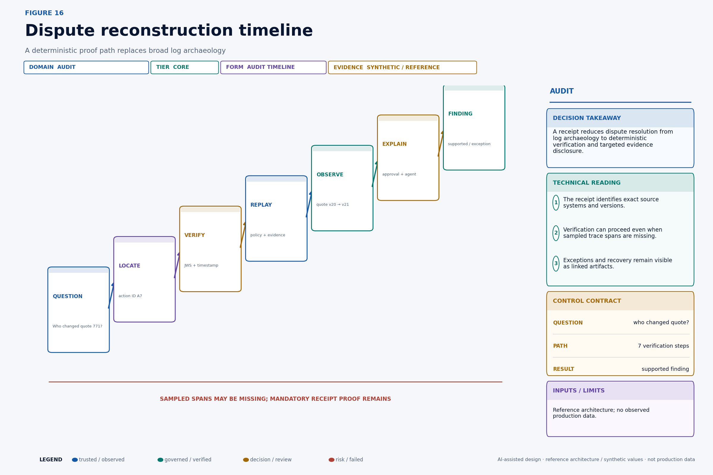
With a receipt, the investigator begins from the resource version or customer-visible action and resolves business_action_id. The signed core identifies proposal, evidence, policy, approval, actor, authority, trace, effect, and recovery. Cryptographic verification detects alteration. As-of evidence replay shows what was used then, not today's corrected state. The domain history proves the version transition. Any missing or failed verification becomes an explicit exception.
The finding should distinguish:
• cryptographically supported: the signed record and key policy validate;
• lineage supported: referenced decision artifacts resolve and match digests;
• effect supported: authoritative state matches the claimed result;
• process conformant: policy, approval, authority, and state transitions meet the applicable control version;
• business justified: a qualified reviewer agrees the decision was reasonable. This is not supplied by cryptography.
That vocabulary prevents audit teams from overclaiming and tells remediation teams what is missing.
Operate receipts with proof-oriented SLOs#
A receipt service that is fast but cannot reconcile ambiguity is not reliable. A service with 100% signed records but 2% orphan lineage does not provide end-to-end proof.
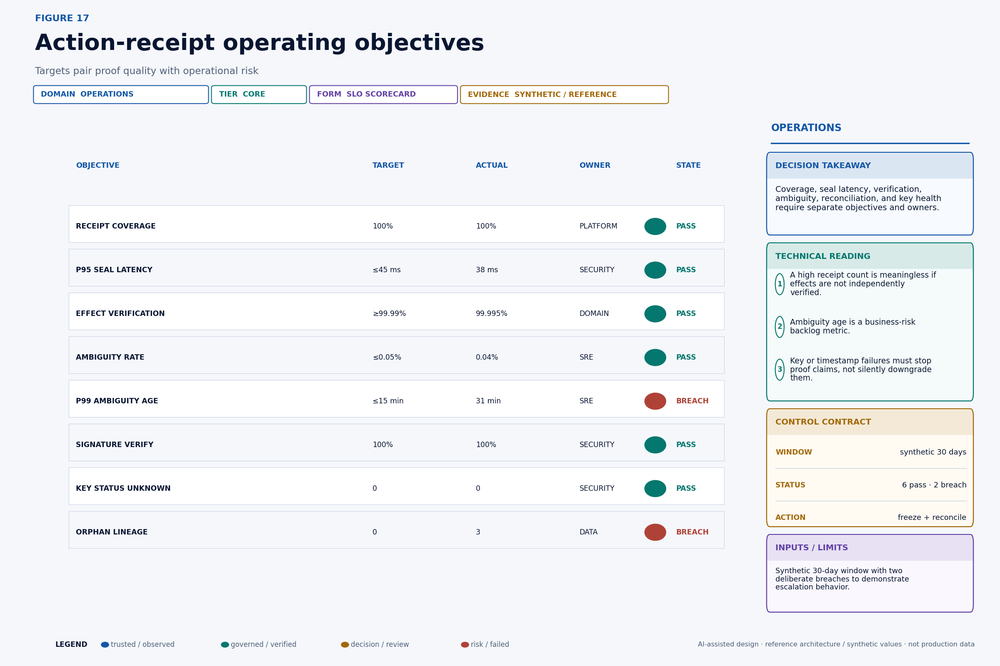
Key objectives include:
• receipt preparation coverage before effect, by action class;
• schema rejection and profile-version errors;
• p50/p95/p99 prepare, verification, and seal latency;
• proportion of effects independently verified;
• ambiguity rate and ambiguity age distribution;
• duplicate-effect rate despite matching action IDs;
• stale-precondition rejection rate;
• signature, timestamp, inclusion-proof, and key-status verification success;
• orphan proposal, evidence, authority, effect, or recovery references;
• receipt-to-resource and resource-to-receipt lookup success;
• disclosure request and legal-hold handling time.
Some targets are zero. A duplicate payment or a receipt sealed under an unknown key status should not disappear inside a percentage. Zero-tolerance events trigger an incident, containment of the action class, reconciliation, evidence preservation, and independent review.
Instrument stage latency separately. Cryptographic operations are often blamed for the entire control path while target writes or verification reads dominate. Measure queue, schema, canonicalization, KMS, append, target, verification, and anchoring stages. Batch anchoring can run after the receipt is individually sealed if the proof contract permits.
Adopt receipts one action class at a time#
Do not begin by signing every log. Begin with one action where ambiguity, dispute, or duplicate effect matters.
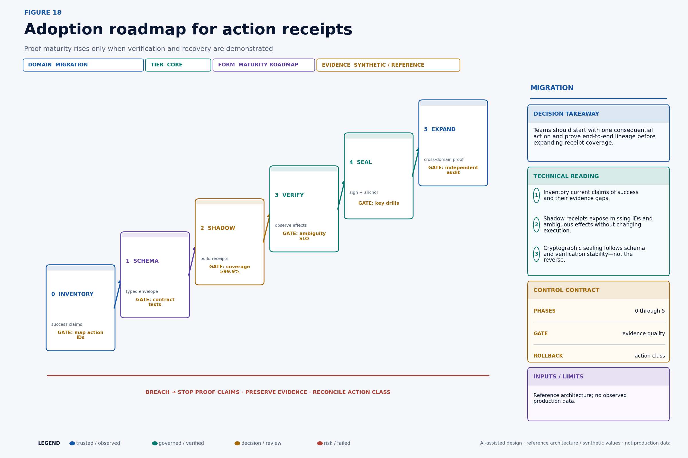
Phase 0 — Inventory claims of completion#
Select an action such as quote.discount.apply. Map every system that currently claims success: agent transcript, orchestrator, authorization service, CRM, event bus, warehouse, and audit log. Document identifiers, preconditions, duplicate handling, retention, and ambiguity.
Gate: one owner and one stable business identity map exist.
Phase 1 — Define the receipt schema and state machine#
Create typed intent and effect schemas, terminal states, failure reasons, lineage requirements, and version rules. Write consumer-driven contract tests. Do not add signatures yet; unstable semantics wrapped in cryptography remain unstable.
Gate: producers and verifiers pass schema and state-transition conformance tests.
Phase 2 — Generate shadow receipts#
Prepare receipts beside existing execution without changing business behavior. Measure coverage, missing IDs, divergent digests, unknown effects, and storage volume. Backfill only when evidence is strong; mark reconstructed receipts as reconstructed.
Gate: receipt preparation covers the target and evidence gaps are within the approved threshold.
Phase 3 — Enforce idempotency and independent verification#
Move action ID reservation before execution, implement atomic target deduplication and preconditions, and operate reconciliation. Block blind retry from ambiguous states.
Gate: ambiguity rate, age, duplicate-effect tests, and recovery drills meet the action-class objective.
Phase 4 — Seal and anchor#
Freeze a canonicalization and signature profile, introduce KMS keys, verify across independent implementations, rotate and revoke keys in drills, and add batch anchoring where needed.
Gate: cryptographic, key-status, timestamp, archive, and recovery verification pass independently.
Phase 5 — Expand across the workflow#
Add child receipts for billing, messaging, fulfillment, and compensation. Define parent completion predicates and selective-disclosure packages. Invite internal audit, security, privacy, legal, and domain owners to challenge the assurance claim.
Gate: cross-domain lineage and terminal parent state withstand independent reconstruction.
Rollback is action-specific. If receipt sealing fails, a high-risk action may stop; a reversible low-risk action may continue in a visibly degraded, unsigned state only if policy explicitly allows it. Never label degraded evidence as sealed proof.
Failure modes and limitations#
The receipt architecture improves evidence, not reality. Its limits must remain visible.
The signer can be compromised. A valid signature from a compromised receipt service authenticates the compromised service. Separate proposal, policy, execution, and verification roles; monitor signing patterns; use narrow KMS authorization; and preserve independent domain evidence.
The verifier can observe the wrong source. A stale read replica or derived event stream may confirm an effect that the authoritative system later rolls back. Define authoritative observation, consistency expectations, and re-verification for delayed settlement.
Canonicalization profiles can diverge. Different schema validation, number handling, Unicode processing, or field projection breaks verification. Maintain test vectors across languages and reject unknown profiles.
Digests can leak small domains. Salting or authenticated encryption is necessary when committed values are guessable. A digest is not anonymization.
Key compromise changes historical confidence. Policy must distinguish a key revoked for routine rotation from a key suspected compromised since an unknown time. Independent timestamps and batch roots can narrow but not eliminate uncertainty.
An append-only store can omit records. External batch commitments and sequence-gap monitoring help. Availability, completeness, and erasure remain separate concerns.
Idempotency stores can partition. If two regions accept the same action ID without coordinated uniqueness, duplicate effects remain possible. Use a consistent ownership strategy, fencing epoch, or domain-native idempotency primitive.
Compensation is not reversal. A refund does not erase a duplicate charge from the customer's experience. A correction email does not make the first message unseen. Receipts must describe compensating effects honestly.
Human approval can still be weak. A receipt proves which approval artifact was bound; it does not prove the reviewer paid attention. Approval packet quality, eligibility, separation of duties, and review metrics remain separate controls.
Retention can conflict with privacy. Long-lived proof and deletion obligations require data minimization, compartmentalization, lawful exceptions, and cryptographic lifecycle planning.
Robustness tests should include dropped responses after commit, duplicated queue delivery, key conflict, stale precondition, executor crash after target success, verifier lag, batch omission, invalid timestamp, schema downgrade, digest mismatch, partial multi-system effect, compensation failure, and deleted evidence payload. Each test asserts receipt state and business invariant—not just an HTTP response.
Production checklist#
Before an agent action is called “receipted,” prove the following.
Contract and identity#
• One stable business_action_id crosses proposal, policy, approval, lease, request, event, trace, effect, verification, and recovery.
• Same action ID with different proposal digest is rejected.
• Typed intent and field-level postcondition are versioned.
• Parent and child workflow completion rules are explicit.
• Every state transition has allowed predecessors and terminal semantics.
Execution and recovery#
• Receipt is prepared before the first possible effect.
• Target idempotency reservation is atomic with or authoritative for the mutation.
• Business precondition is enforced at the target.
• Timeout after possible effect becomes ambiguous.
• Independent verification observes authoritative state.
• Recovery uses the same action ID or a linked new authorized action, never a blind duplicate.
• Compensation receives its own proposal, authority, verification, and receipt.
Cryptographic proof#
• Signed-field projection and canonicalization profile are documented.
• Cross-language canonicalization and JWS test vectors pass.
• Algorithms are pinned; arbitrary receipt-selected keys and algorithms are denied.
• Signing keys have narrow use, rotation, revocation, audit, and compromise policy.
• Batch ordering, Merkle proof, and timestamp validation are specified where used.
• Archive verification material will survive the retention period.
Privacy and operations#
• Signed core contains the minimum necessary content.
• Sensitive evidence is compartmentalized by role, purpose, case, and time.
• Digests of low-entropy data cannot be brute-forced trivially.
• Receipt coverage, verification, ambiguity, lineage, and key health have owners and SLOs.
• Resource-to-receipt and receipt-to-resource lookups work.
• Legal hold, deletion, and disclosure workflows are tested.
• Independent audit can reconstruct one representative action without privileged tribal knowledge.
Questions that can change the design#
1. Which domain system is authoritative for effect, and at what consistency level?
2. What is the stable business identity for retries across protocols and regions?
3. Which actions are reversible, compensable, or irreversible in customer experience?
4. Which receipt fields must remain verifiable for seven years, and which must be deleted sooner?
5. What is the assurance claim of a signature when the key is later compromised?
6. Can the target atomically bind idempotency and mutation, or is reconciliation unavoidable?
7. How will parent workflows express partial success and mixed compensation?
8. Which evidence can an auditor, customer, regulator, or incident responder see?
9. What happens when the receipt service, KMS, verifier, or timestamp authority is unavailable?
10. Which business metric proves that receipts reduce loss or investigation time enough to justify their cost?
If these questions have no owned answers, signing more data will not create accountability.
The durable principle#
Agents make software behavior less predictable at the same moment organizations ask them to perform more consequential work. That combination makes durable proof more—not less—important.
Traces remain essential for latency and causality. Logs remain essential for operations. Events remain essential for integration. None should be stretched into a guarantee it was not designed to provide. The receipt joins them to the business decision, records uncertainty honestly, and closes only when the effect is independently observed or explicitly recovered.
The action receipt is also a forcing function. To create one, the team must define exact intent, evidence, authority, idempotency, preconditions, postconditions, terminal state, recovery, retention, and disclosure. Those definitions improve the system even before the first signature is produced.
An agent can say, “I changed the quote.” A production system should answer:
Which quote version? Which approved delta? Which evidence? Which authority? Which request? Which observed effect? Which verifier? Which recovery state? Which proof?
If the organization cannot answer those questions from one durable chain, the action is not complete. It is merely a claim in a transcript.